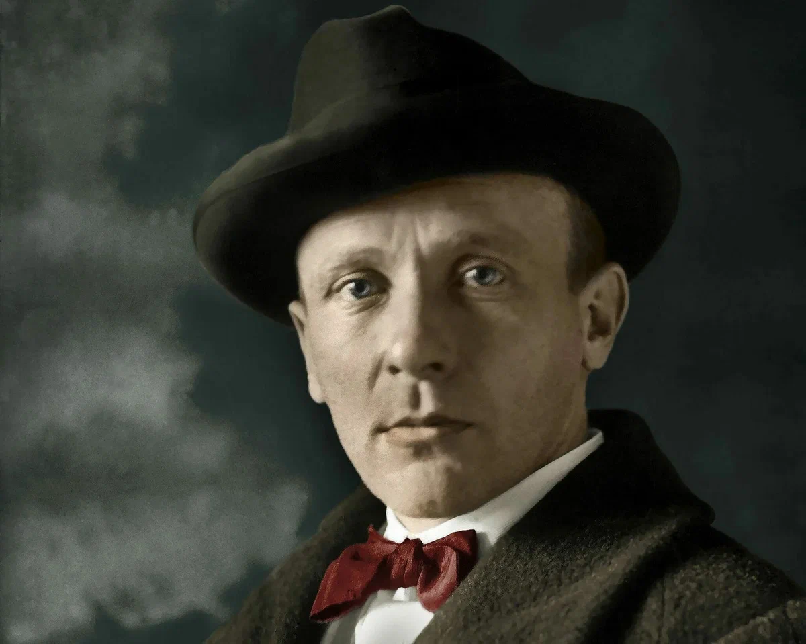
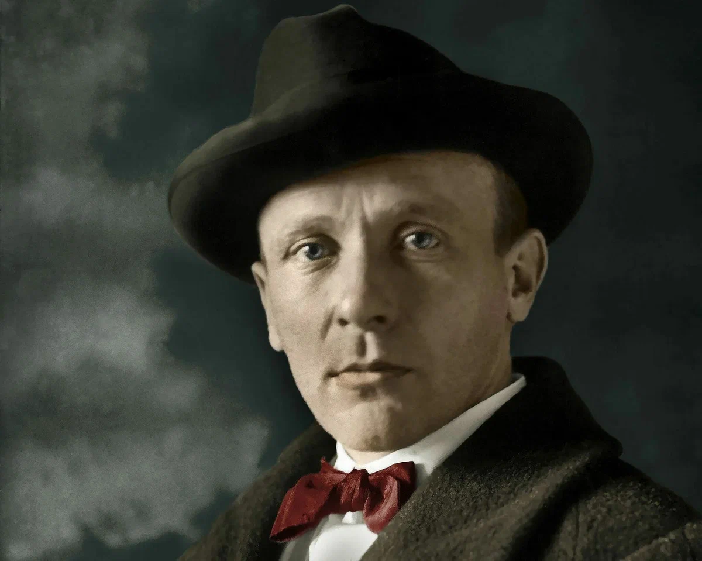

Добро пожаловать на сайт!
Этот сайт посвящён великому роману Михаила Булгакова "Мастер и Маргарита". Здесь вы найдёте информацию о романе, персонажах и цитатах, которые вдохновляют миллионы людей.
«Рукописи не горят.»
Этот сайт посвящён великому роману Михаила Булгакова "Мастер и Маргарита". Здесь вы найдёте информацию о романе, персонажах и цитатах, которые вдохновляют миллионы людей.
«Рукописи не горят.»